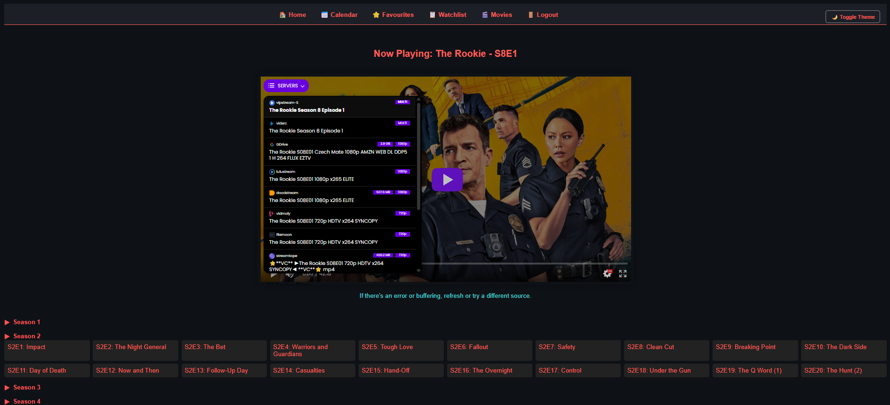
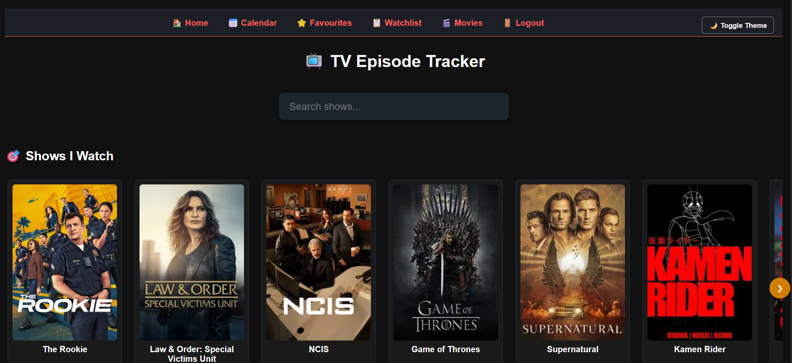
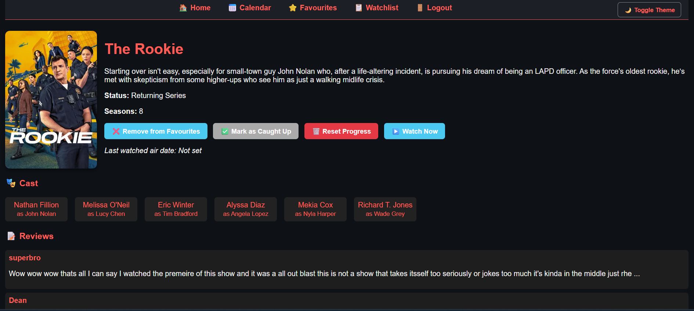
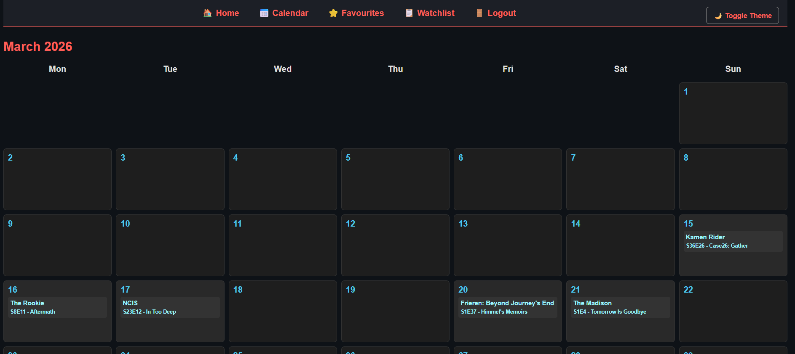

A self‑hosted TV series and movie tracker powered by the TMDB API.
Installation GuideThe full source code for TV Tracker is hosted on GitHub. You can download the latest version, report issues, or contribute to development.
Repository:
https://github.com/anon0110/tv-tracker
Use the repository to download the project files or clone the project directly to your server.
Clone the repository directly:
git clone https://github.com/anon0110/tv-tracker.git
Then upload the files to your server and run the installer.
TV Tracker is a lightweight web application that lets you track your favorite TV shows and movies using data from The Movie Database (TMDB).
The app is designed to be simple, fast, and self‑hosted so you have full control over your watch history and data.
Preview of the TV Tracker interface.




TV Tracker includes an easy web‑based installer.
Upload the project files to your web server directory.
Open your browser and navigate to:
http://yourdomain.com/setup.php
Follow the setup steps to configure your database and TMDB API key.
This project uses the TMDB API for TV and movie metadata. You will need to generate a free API key from TMDB and add it during installation.